价差套利多平台多账户 - 使用说明
第一步：运行环境准备
运行目录下的dotNetFx4.8.exe，如果之前没有安装，运行dotNetFx4.8.exe，直到安装完成，如果之前已经安装，直接退出到第二步。
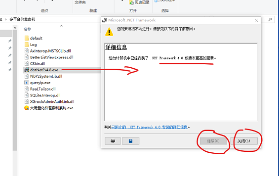
第二步：申请账号
运行目录下的queryip.exe，将机器码发送给客服，获取系统使用权。
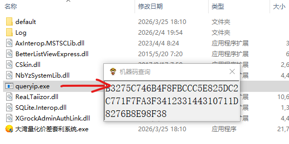
第三步：配置账号，配置策略
打开软件，进入主界面。先添加主账号，再添加对冲账号，然后添加策略，设置交易模块。
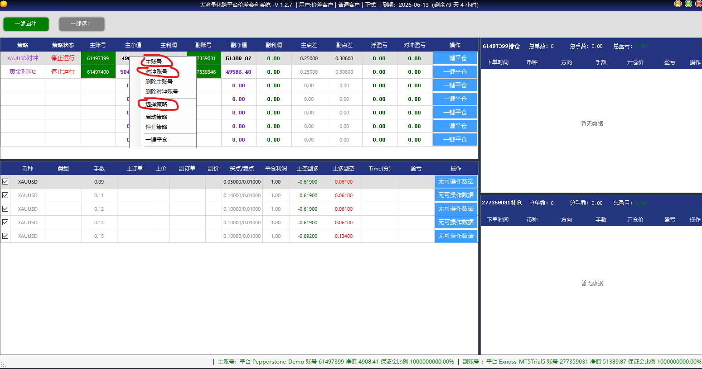
配置账号的时候，如果没有找到服务器，可以在线搜索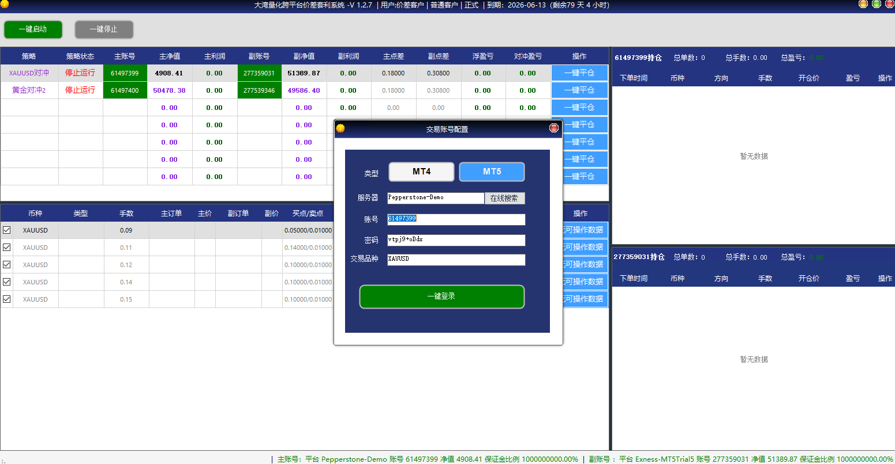
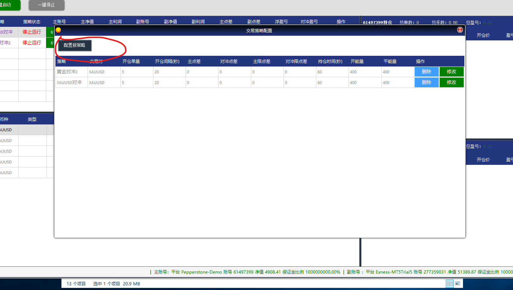
添加策略的时候，着重添加开仓单量，开仓间隔，持仓时间，开仓平仓能量，手续费，点差这几个参数。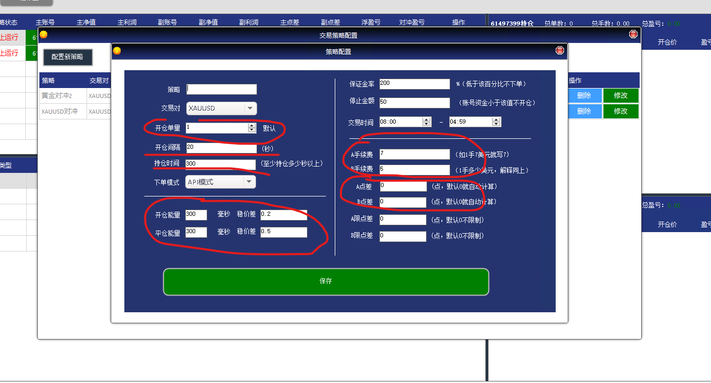
设置交易模块：点击一行。弹出模块设置，配置手数，开仓参数，平仓参数，平仓预期利润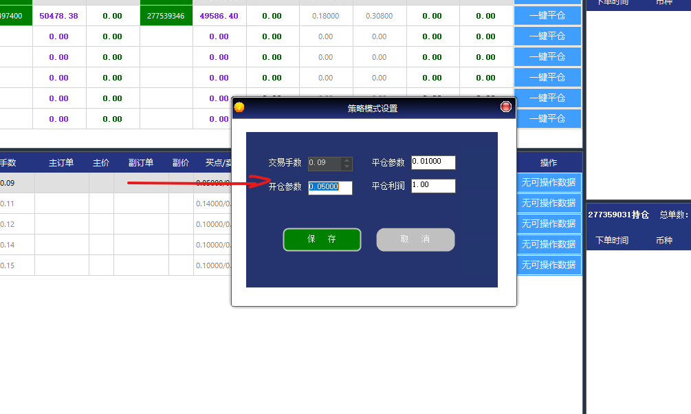
第四步：配置其他账号
在主界面中，给你预留多少行账号配置的数据表格，就可以配置多少对对冲交易的账号。图中共7行，说明可以配置7对账号
第五步：启动与监控
确认所有配置无误后，点击“一键启动”按钮开始运行或者选择一行单独启动一对账号进行交易对冲。通过软件内置的监控面板实时观察各账户的持仓、盈亏和交易记录。
联系我们：
价差套利UI自动化 - 使用说明
第一步：运行环境准备
运行目录下的dotNetFx4.8.exe，如果之前没有安装，运行dotNetFx4.8.exe，直到安装完成，如果之前已经安装，直接退出到第二步。
第二步：获取系统使用权
运行目录下的queryip.exe，将机器码发送给客服，获取系统使用权。
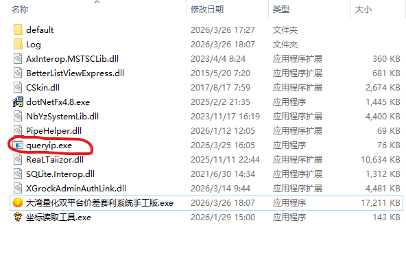
第三步：配置对冲账号
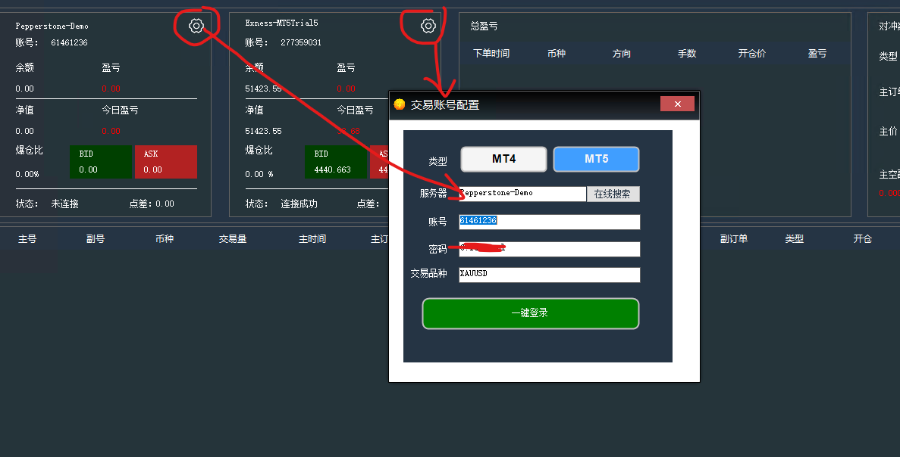
第四步：配置策略
鼠标右键弹出下拉，点击策略配置
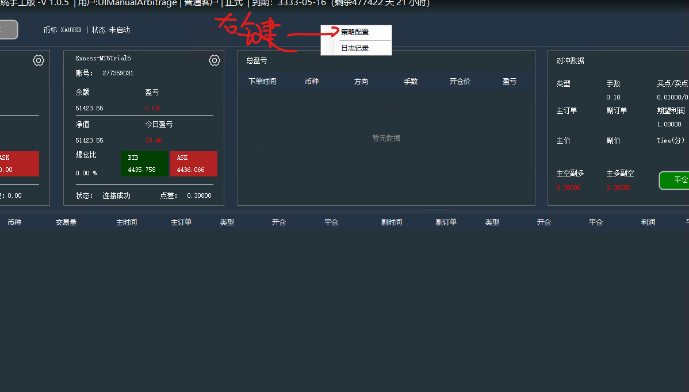
- 填写开仓参数，平仓参数，预期利润和开仓手数。
- 填写交易间隔，持仓时间，不要让交易太频繁。
- 填写开仓能量，平仓能量等
- 填写6个坐标：主账号开空坐标、开多坐标、平仓坐标，对冲账号开空坐标、开多坐标、平仓坐标
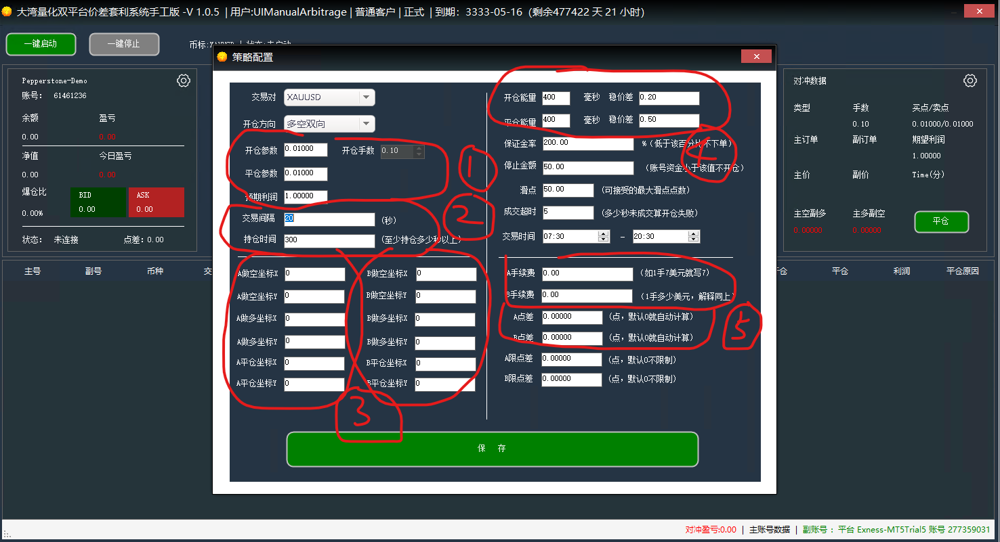
第五步：开始自动化
启动软件，它将模拟鼠标操作，在各个MT4/MT5客户端之间进行下单、平仓等操作。运行过程中，不可和程序抢鼠标。
联系我们：
API跟单软件 - 使用说明
第一步：运行环境准备
运行目录下的dotNetFx4.8.exe，如果之前没有安装，运行dotNetFx4.8.exe，直到安装完成，如果之前已经安装，直接退出到第二步。
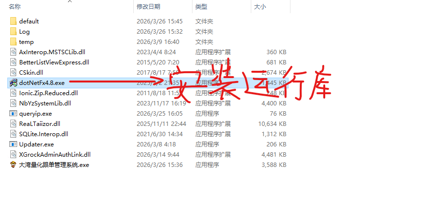
第二步：获取系统使用权
运行目录下的queryip.exe，将机器码发送给客服，获取系统使用权。
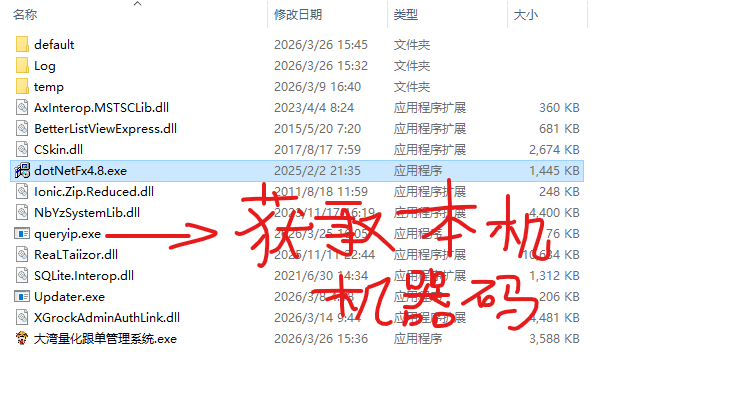
第三步：准备交易账户
在开始之前，请确保您已经准备好以下信息：
- 您的MT4或MT5交易账户的登录凭据（账户号码，密码，服务器，后缀）。
- 您希望跟随的信号源账户。
- 一台能够持续运行的电脑或服务器，以保证软件24/7不间断运行。
第四步：配置信号账号
首次启动软件后，您需要配置您的信号账号。
- 进入主界面。
- 点击信号配置，鼠标移动到服务器输入框，下拉选项如果没有对应的服务器，点击在线搜索
- 搜索成功后，返回再配置账号，选择对应的服务器，输入账号，密码，后缀，如果需要备注，也可以对账号进行备注，清楚区分
- 输入成功后，点击一键登录，这样信号就配置成功了。
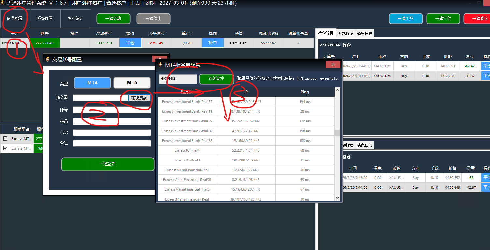
第四步：配置跟单账号
- 选择一个信号，鼠标右键选择下拉选项->跟单账号配置。
- 弹出账号配置界面，和信号配置一样。输入账号数据即可
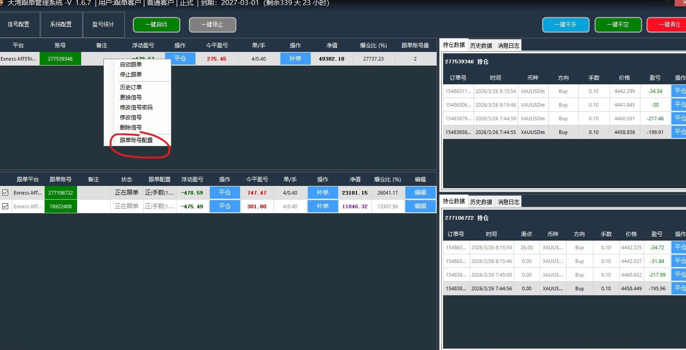
跟单账号的界面框和信号账号的配置是一样的。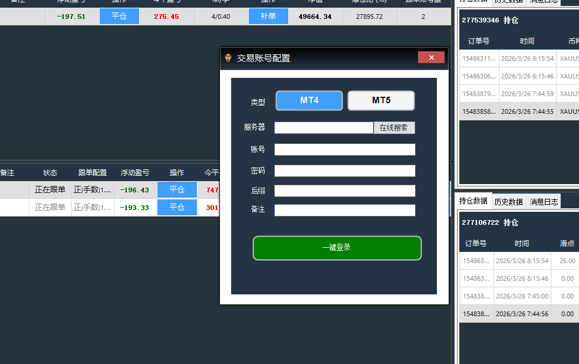
第五步：配置跟单
- 选择一个跟单账号，点击最后一栏 -> 编辑。
- 弹出账号配置界面，和信号配置一样。输入账号数据即可
- 这里有个是否启用选项，如果不启用，开仓和平仓都不会跟单
- 如果启用，开仓和平仓都会跟单。还有一个，停止跟单，如果启用状态下，是停止跟单的，开仓不会跟单，但是平仓会跟
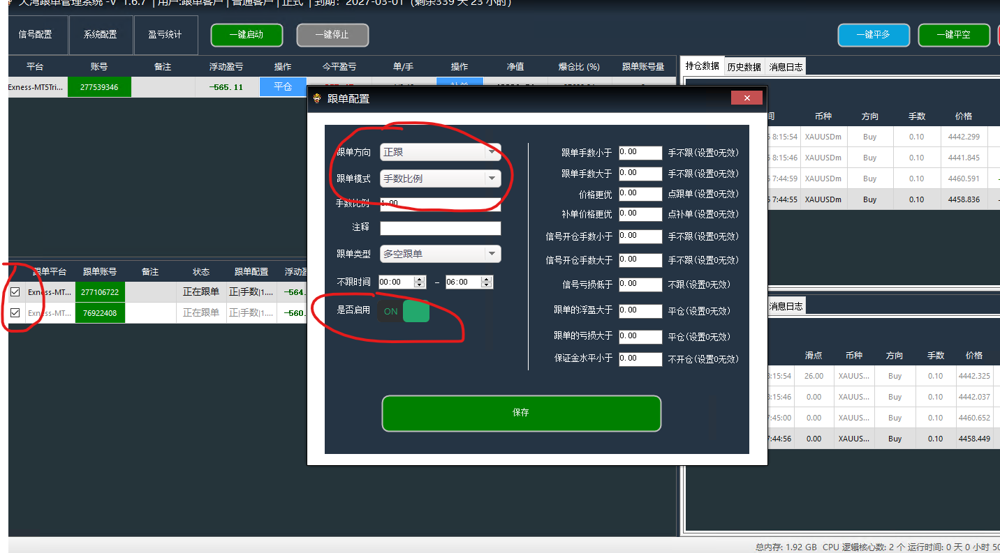
第六步：特殊品种转换
- 选择一个跟单账号，右键选择品种转换。
- 品种转换框，选择对应的喊单品种和跟单的品种
- 保存即可
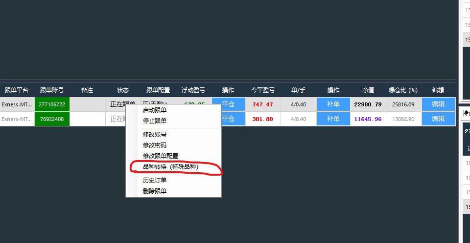
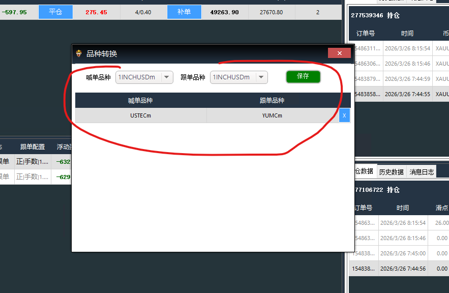
第七步：系统配置
- 合约规格：如果两个账号交易品种的合约量不同，则对合约规格比对打勾
- 输入漏单检测，时间比对，这个默认即可
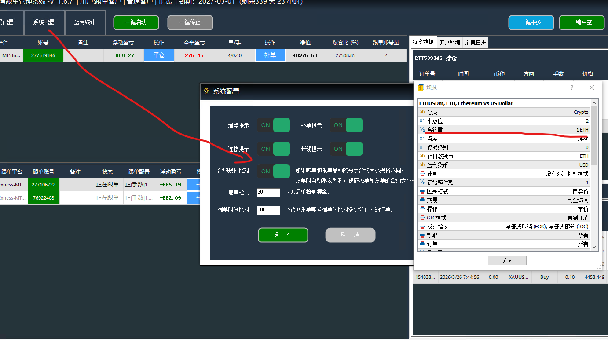
第八步：配置完成这些后，就可以开启跟单
联系我们：